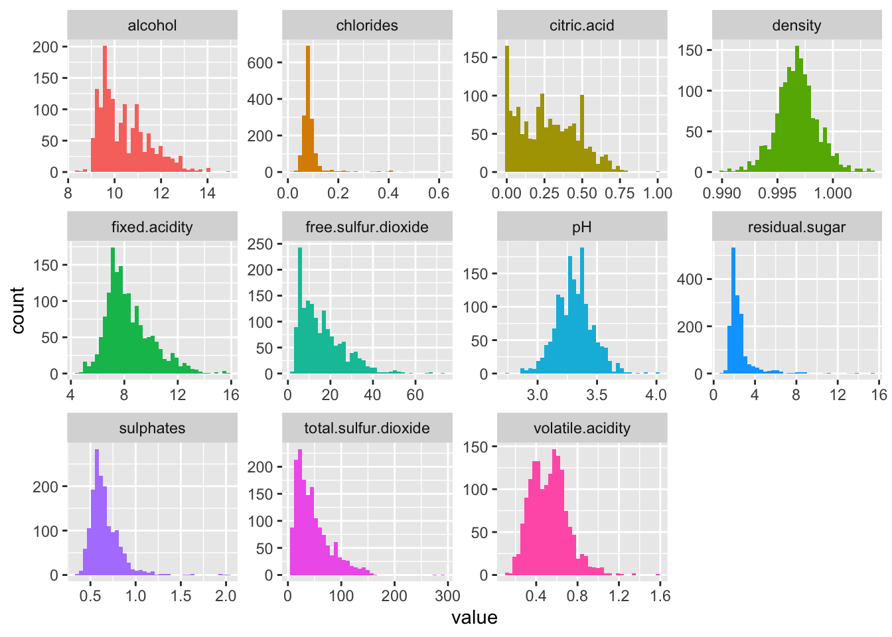
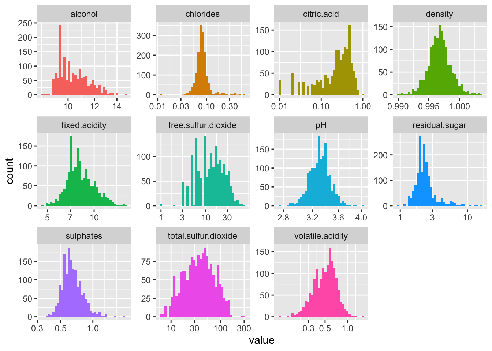
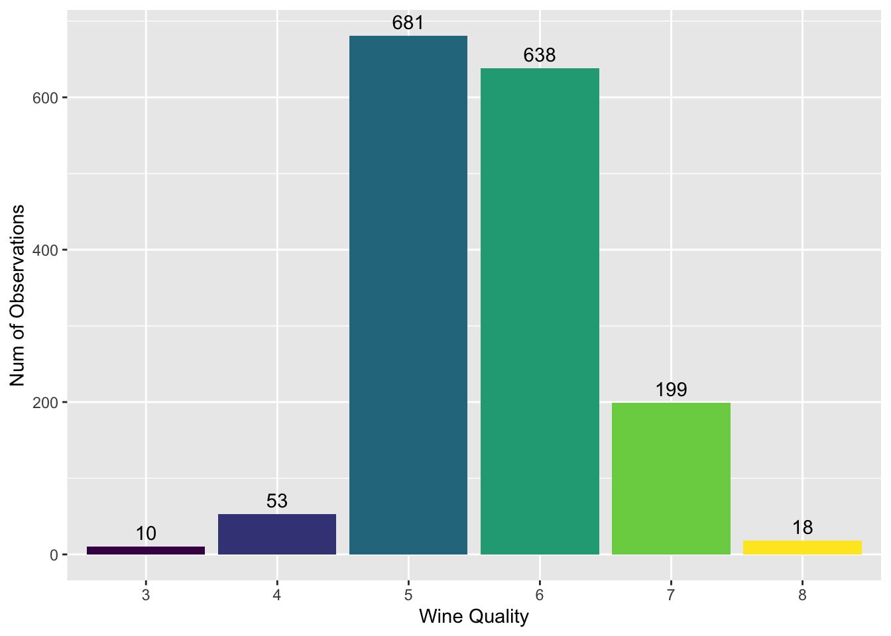
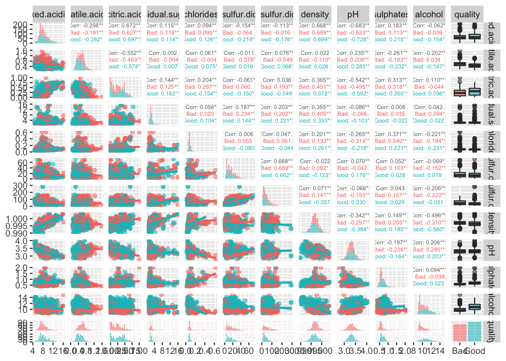
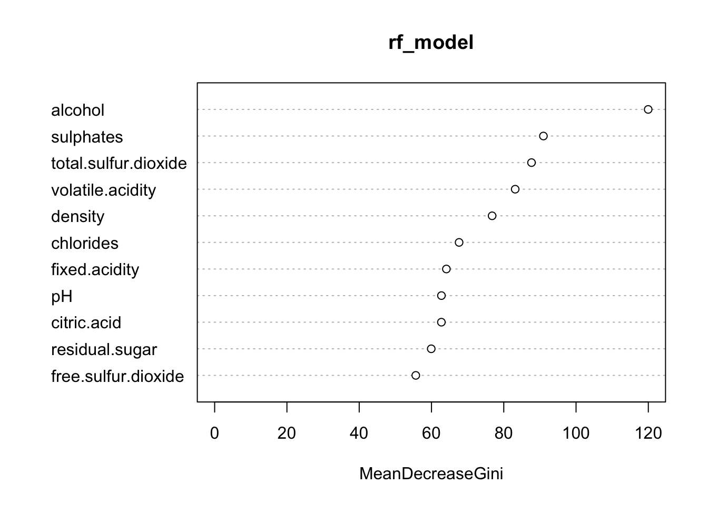

Introduction
Dataset: The data is about red wine samples (vinho verde) from Portugal. It was collected from May 2004 to February 2007 using only protected designation of origin samples that were tested at the official certification entity.
Question: The objective is to determine the most effective method for determining the wine’s quality, or in other words, explore the variables that may impact the quality of the wine.
EDA & Modelling Results
library(ggplot2) # Plotting
library(GGally) # ggpairs plot## Registered S3 method overwritten by 'GGally':
## method from
## +.gg ggplot2library(caret) # Showing Confusion Matrix Data (among many other useful functions)## Loading required package: latticelibrary(purrr) # Organizing##
## Attaching package: 'purrr'## The following object is masked from 'package:caret':
##
## liftlibrary(tidyr) # Organize/tidy data
library(reshape) # Melt data for plotting##
## Attaching package: 'reshape'## The following objects are masked from 'package:tidyr':
##
## expand, smithslibrary(knitr) #kable(head(wineDf)) ## Read in the Data
wineDf = read.csv("winequality-red.csv", header=T) # Load the data
wineDf.orig = wineDf # Save off original copy before making any alterations
## Change quality to categorical
wineDf$quality = as.ordered(wineDf$quality) # Change quality to (ordered) factor
## Split wine quality into good wine or bad wine for later
wineDfBinaryQuality = wineDf.orig
wineDfBinaryQuality$quality = as.factor(ifelse(wineDf.orig$quality>5.5,"Good","Bad"))
## Visual Look at the Numeric/Continuous Variables in Data Set
wineDf %>%
keep(is.numeric) %>%
gather() %>%
ggplot(aes(value,fill=key)) +
facet_wrap(~ key, scales = "free") +
geom_histogram(bins=sqrt(nrow(wineDf))) +
theme(legend.position="none") 
### Log transformation
wineDf %>%
keep(is.numeric) %>%
gather() %>%
ggplot(aes(value,fill=key)) +
facet_wrap(~ key, scales = "free") +
geom_histogram(bins=sqrt(nrow(wineDf))) +
theme(legend.position="none") +
scale_x_continuous(trans='log10')## Warning: Transformation introduced infinite values in continuous x-axis## Warning: Removed 132 rows containing non-finite values (stat_bin).
Interpretation: The first figure shows that density and pH appear to be symmetric, with no heavy tails. This indicates that the distribution appears to be normal distribution. Volatile acidity has a reasonably typical distribution as well. Looking at the remaining variables, one can observe that a number of distributions, such as chlorides, fixed acidity, residual sugar, and sulphates, are skewed (having a right tail). This suggests that the majority of the wines in these distributions have lower end values, with a few exceptions having somewhat higher end values. Looking at residual sugar, for example, the majority of the numbers lie between 0 and 4 grams of residual sugar per decimeter cubed of wine; nevertheless, there are a few values that are higher than 4 and even some that are lower. Here, log transformation is applied to improve the skewed distribution. By setting the x axis to a log scale, we can demonstrate this impact. Below are the identical graphs, but with the x axis displayed on a log scale. We then observe in the second Figure that the previously skewed distributions appear more visually normal. This illustrates the results of applying a log transformation to a (right tail) skewed distribution. Now that the numerical/continuous data has been examined, let’s use a bar plot to examine quality, the only variable in the data that resembles a categorical one.
## Visualization of Wine Quality
ggplot(wineDf, aes(x=quality, fill = quality)) +
geom_bar(stat="count") +
geom_text(position = "stack", stat='count',aes(label=..count..), vjust = -0.5)+
labs(y="Num of Observations", x="Wine Quality") +
theme(legend.position="none")
Interpretation: The figure illustrates how quality is not evenly distributed from 0 to 10. The majority of numbers fall between 5 and 6. In other words, there are significantly more average wines than extremely good or subpar wines. Because of this, it could be more challenging to define what makes a good or bad wine. To help with this, one may simply divide the wines into two categories: good wine quality and low wine quality. It would be logical to divide the wines into bad and good wines by 5 or below and 6 or above if one wants to create a binary wine quality variable that is consistent across all wines because 5 and 6 have a pretty even number of wines and have the majority of the wines overall.
## Visual Look at the Data Set with Pairs Plot Colored by Good/Bad Wine Quality
ggpairs(wineDfBinaryQuality,
aes(alpha=0.6, color = quality),
upper = list(continuous = wrap("cor", size = 2)),
diag = list(continuous = "barDiag"),
lower = list(continuous = "smooth"))## `stat_bin()` using `bins = 30`. Pick better value with `binwidth`.
## `stat_bin()` using `bins = 30`. Pick better value with `binwidth`.
## `stat_bin()` using `bins = 30`. Pick better value with `binwidth`.
## `stat_bin()` using `bins = 30`. Pick better value with `binwidth`.
## `stat_bin()` using `bins = 30`. Pick better value with `binwidth`.
## `stat_bin()` using `bins = 30`. Pick better value with `binwidth`.
## `stat_bin()` using `bins = 30`. Pick better value with `binwidth`.
## `stat_bin()` using `bins = 30`. Pick better value with `binwidth`.
## `stat_bin()` using `bins = 30`. Pick better value with `binwidth`.
## `stat_bin()` using `bins = 30`. Pick better value with `binwidth`.
## `stat_bin()` using `bins = 30`. Pick better value with `binwidth`.
## `stat_bin()` using `bins = 30`. Pick better value with `binwidth`.
## `stat_bin()` using `bins = 30`. Pick better value with `binwidth`.
## `stat_bin()` using `bins = 30`. Pick better value with `binwidth`.
## `stat_bin()` using `bins = 30`. Pick better value with `binwidth`.
## `stat_bin()` using `bins = 30`. Pick better value with `binwidth`.
## `stat_bin()` using `bins = 30`. Pick better value with `binwidth`.
## `stat_bin()` using `bins = 30`. Pick better value with `binwidth`.
## `stat_bin()` using `bins = 30`. Pick better value with `binwidth`.
## `stat_bin()` using `bins = 30`. Pick better value with `binwidth`.
## `stat_bin()` using `bins = 30`. Pick better value with `binwidth`.
## `stat_bin()` using `bins = 30`. Pick better value with `binwidth`.
Interpretation: One can more clearly distinguish between the two groups when the data is colored by good vs. bad wine. For instance, the alcohol and quality plots in the bottom right corner demonstrate that while some poor wines have low alcohol content (in a skewed distribution), superior wines have a more even distribution and generally have greater alcohol contents. Additionally, one can observe from the scatter plots and trend lines at the bottom left that, for each set of factors, terrible and good wines generally appear to follow a similar trend. We can observe how each numerical variable is distributed in relation to good vs. bad quality from the box plots for bad vs. good quality on the right. As was already said, fine wines typically have more alcohol. In general, good wines also tend to have more citric acid and sulfates. Bad wines typically have slightly greater densities and more volatile acidity. Based on the box plots, it is difficult to visually distinguish between good and terrible wines using the other numerical factors.
## Spliting the data into training set and test set
df <- read.csv("winequality-red.csv")
df$quality <- as.factor(df$quality)
set.seed(123)
index <- sample(1:nrow(df),size = 0.8*nrow(df))
train <- df[index,]
test <- df[-index,]
## Linear regression
df_lm <- read.csv("winequality-red.csv")
train_lm <- df_lm[index,]
test_lm <- df_lm[-index,]
lm_model <- glm(quality ~., data = train_lm)
lm_prediction <- predict(lm_model, test_lm)
lm_prediction <- round(lm_prediction, digits = 0)
lm_prediction <- as.factor(lm_prediction)
test_lm$quality <- as.factor(test_lm$quality)
lm_matrix <- confusionMatrix(lm_prediction, test_lm$quality)## Warning in confusionMatrix.default(lm_prediction, test_lm$quality): Levels are
## not in the same order for reference and data. Refactoring data to match.lm_matrix## Confusion Matrix and Statistics
##
## Reference
## Prediction 3 4 5 6 7 8
## 3 0 0 0 0 0 0
## 4 0 0 0 0 0 0
## 5 2 8 107 43 0 0
## 6 0 1 42 81 16 2
## 7 0 0 0 7 11 0
## 8 0 0 0 0 0 0
##
## Overall Statistics
##
## Accuracy : 0.6219
## 95% CI : (0.5663, 0.6752)
## No Information Rate : 0.4656
## P-Value [Acc > NIR] : 1.409e-08
##
## Kappa : 0.3489
##
## Mcnemar's Test P-Value : NA
##
## Statistics by Class:
##
## Class: 3 Class: 4 Class: 5 Class: 6 Class: 7 Class: 8
## Sensitivity 0.00000 0.00000 0.7181 0.6183 0.40741 0.00000
## Specificity 1.00000 1.00000 0.6901 0.6772 0.97611 1.00000
## Pos Pred Value NaN NaN 0.6687 0.5704 0.61111 NaN
## Neg Pred Value 0.99375 0.97188 0.7375 0.7191 0.94702 0.99375
## Prevalence 0.00625 0.02813 0.4656 0.4094 0.08438 0.00625
## Detection Rate 0.00000 0.00000 0.3344 0.2531 0.03438 0.00000
## Detection Prevalence 0.00000 0.00000 0.5000 0.4437 0.05625 0.00000
## Balanced Accuracy 0.50000 0.50000 0.7041 0.6478 0.69176 0.50000# logistic regression
df_lr <- read.csv("winequality-red.csv")
df_lr$quality <- ifelse(df_lr$quality>5,1,0)
df_lr$quality <- as.factor(df_lr$quality)
train_lr <- df_lr[index,]
test_lr <- df_lr[-index,]
lr_model <- glm(quality ~., data = train_lr, family = "binomial")
lr_prediction <- predict(lr_model, test_lr, type = "response")
lr_prediction <- round(lr_prediction, digits = 0)
lr_prediction <- as.factor(lr_prediction)
lr_matrix <- confusionMatrix(lr_prediction, test_lr$quality)
lr_matrix## Confusion Matrix and Statistics
##
## Reference
## Prediction 0 1
## 0 124 48
## 1 36 112
##
## Accuracy : 0.7375
## 95% CI : (0.6857, 0.7849)
## No Information Rate : 0.5
## P-Value [Acc > NIR] : <2e-16
##
## Kappa : 0.475
##
## Mcnemar's Test P-Value : 0.2301
##
## Sensitivity : 0.7750
## Specificity : 0.7000
## Pos Pred Value : 0.7209
## Neg Pred Value : 0.7568
## Prevalence : 0.5000
## Detection Rate : 0.3875
## Detection Prevalence : 0.5375
## Balanced Accuracy : 0.7375
##
## 'Positive' Class : 0
## Interpretation: The linear model’s performance is ordinary, according to the evaluation metrics we use here. Only a 0.6219 accuracy out of 1.0, with CI of (0.5663, 0.6752). The kappa coefficient was calculated as 0.3489, which is a considerably fair result. The performance of logstic model does improve referring to the evaluation metrics here, compared to linear regression model fitted earlier. (0.7375 accuracy out of 1.0, with CI of (0.6857, 0.7489)) However, it’s much easier for the model to guess right when there are only 2 possible outcomes in this case.
# simplest random forest
library(randomForest)## randomForest 4.7-1.1## Type rfNews() to see new features/changes/bug fixes.##
## Attaching package: 'randomForest'## The following object is masked from 'package:ggplot2':
##
## marginrf_model <- randomForest(quality ~., data = train)
rf_prediction <- predict(rf_model, test)
library(caret)
rf_matrix <- confusionMatrix(rf_prediction, test$quality)
rf_matrix## Confusion Matrix and Statistics
##
## Reference
## Prediction 3 4 5 6 7 8
## 3 0 0 0 0 0 0
## 4 0 0 0 0 0 0
## 5 1 7 120 30 0 0
## 6 1 2 27 95 14 1
## 7 0 0 2 6 13 0
## 8 0 0 0 0 0 1
##
## Overall Statistics
##
## Accuracy : 0.7156
## 95% CI : (0.6628, 0.7644)
## No Information Rate : 0.4656
## P-Value [Acc > NIR] : < 2.2e-16
##
## Kappa : 0.5143
##
## Mcnemar's Test P-Value : NA
##
## Statistics by Class:
##
## Class: 3 Class: 4 Class: 5 Class: 6 Class: 7 Class: 8
## Sensitivity 0.00000 0.00000 0.8054 0.7252 0.48148 0.500000
## Specificity 1.00000 1.00000 0.7778 0.7619 0.97270 1.000000
## Pos Pred Value NaN NaN 0.7595 0.6786 0.61905 1.000000
## Neg Pred Value 0.99375 0.97188 0.8210 0.8000 0.95318 0.996865
## Prevalence 0.00625 0.02813 0.4656 0.4094 0.08438 0.006250
## Detection Rate 0.00000 0.00000 0.3750 0.2969 0.04063 0.003125
## Detection Prevalence 0.00000 0.00000 0.4938 0.4375 0.06563 0.003125
## Balanced Accuracy 0.50000 0.50000 0.7916 0.7435 0.72709 0.750000# More complicated random forest using caret and ranger packages (10-fold cross-validation)
library(ranger)##
## Attaching package: 'ranger'## The following object is masked from 'package:randomForest':
##
## importancecaret_rf_model <- train(
quality ~ .,
tuneLength = 10,
data = train, method = "ranger",
trControl = trainControl(method = "cv", number = 10, verboseIter = FALSE)
)
caret_rf_predict <- predict(caret_rf_model, test)
caret_rf_matrix <- confusionMatrix(caret_rf_predict, test$quality)
caret_rf_matrix## Confusion Matrix and Statistics
##
## Reference
## Prediction 3 4 5 6 7 8
## 3 0 0 0 0 0 0
## 4 0 0 0 0 0 0
## 5 1 6 120 31 0 0
## 6 1 3 27 93 12 1
## 7 0 0 2 7 15 0
## 8 0 0 0 0 0 1
##
## Overall Statistics
##
## Accuracy : 0.7156
## 95% CI : (0.6628, 0.7644)
## No Information Rate : 0.4656
## P-Value [Acc > NIR] : < 2.2e-16
##
## Kappa : 0.5168
##
## Mcnemar's Test P-Value : NA
##
## Statistics by Class:
##
## Class: 3 Class: 4 Class: 5 Class: 6 Class: 7 Class: 8
## Sensitivity 0.00000 0.00000 0.8054 0.7099 0.55556 0.500000
## Specificity 1.00000 1.00000 0.7778 0.7672 0.96928 1.000000
## Pos Pred Value NaN NaN 0.7595 0.6788 0.62500 1.000000
## Neg Pred Value 0.99375 0.97188 0.8210 0.7923 0.95946 0.996865
## Prevalence 0.00625 0.02813 0.4656 0.4094 0.08438 0.006250
## Detection Rate 0.00000 0.00000 0.3750 0.2906 0.04688 0.003125
## Detection Prevalence 0.00000 0.00000 0.4938 0.4281 0.07500 0.003125
## Balanced Accuracy 0.50000 0.50000 0.7916 0.7386 0.76242 0.750000## look at the importance of variables
varImp(rf_model) %>% kable| Overall | |
|---|---|
| fixed.acidity | 64.12203 |
| volatile.acidity | 83.16457 |
| citric.acid | 62.74116 |
| residual.sugar | 59.93305 |
| chlorides | 67.63975 |
| free.sulfur.dioxide | 55.65824 |
| total.sulfur.dioxide | 87.67934 |
| density | 76.77900 |
| pH | 62.75414 |
| sulphates | 90.97401 |
| alcohol | 119.96149 |
varImpPlot(rf_model)
Interpretation: The variable importance plot in Figure 8 provides a list of the most significant variables in descending order by a mean decrease in Gini. The top variables contribute more to the model than the bottom ones and also have high predictive power in classifying default and non-default customers. a) In this case, alcohol has the largest mean decrease in Gini compared to other variables, which demonstrates that it has high predictive power in predicting our target variable – wine quality. This is kind of reasonable since A wine with a higher alcohol content will have a fuller, richer body, while a lower-level alcohol wine will taste lighter and more delicate on the palate (Masterclass Staff, 2020). b) Sulfites are a group of chemical compounds found naturally in a variety of foods and beverages. Research shows that a small percentage of the population is even sensitive to sulfites and may experience side effects like headaches, hives, swelling, stomach pain, and diarrhea. That may be one of the reasons why it’s the second most important of our all variables. c) Besides, Total sulfur dioxide, Volatile acidity and Density also show high importance in our analysis, which may contribute to the realistic wine manufacturing process.
# SVM
library(e1071)
tune_out <-
tune.svm(x = train[, -12], y = train[, 12],
type = "C-classification", cost = c(0.1, 1, 10, 100),
gamma = c(0.1, 1, 10), coef0 = c(0.1, 1, 10))
svm_model <- svm(quality~ ., data = train, type = "C-classification",
cost = tune_out$best.parameters$cost,
gamma = tune_out$best.parameters$gamma,
coef0 = tune_out$best.parameters$coef0)
svm_predict <- predict(svm_model, test)
svm_predict <- as.factor(svm_predict)
svm_matrix <- confusionMatrix(svm_predict, test$quality)
svm_matrix## Confusion Matrix and Statistics
##
## Reference
## Prediction 3 4 5 6 7 8
## 3 0 0 0 0 0 0
## 4 0 0 0 0 0 0
## 5 1 7 116 38 2 0
## 6 1 2 32 90 17 0
## 7 0 0 1 3 8 2
## 8 0 0 0 0 0 0
##
## Overall Statistics
##
## Accuracy : 0.6688
## 95% CI : (0.6142, 0.7201)
## No Information Rate : 0.4656
## P-Value [Acc > NIR] : 1.924e-13
##
## Kappa : 0.4249
##
## Mcnemar's Test P-Value : NA
##
## Statistics by Class:
##
## Class: 3 Class: 4 Class: 5 Class: 6 Class: 7 Class: 8
## Sensitivity 0.00000 0.00000 0.7785 0.6870 0.29630 0.00000
## Specificity 1.00000 1.00000 0.7193 0.7249 0.97952 1.00000
## Pos Pred Value NaN NaN 0.7073 0.6338 0.57143 NaN
## Neg Pred Value 0.99375 0.97188 0.7885 0.7697 0.93791 0.99375
## Prevalence 0.00625 0.02813 0.4656 0.4094 0.08438 0.00625
## Detection Rate 0.00000 0.00000 0.3625 0.2812 0.02500 0.00000
## Detection Prevalence 0.00000 0.00000 0.5125 0.4437 0.04375 0.00000
## Balanced Accuracy 0.50000 0.50000 0.7489 0.7059 0.63791 0.50000The accuracy of SVM is 0.6688, which indicates that the SVM model correctly predicts the value for quality more than 66% of the time. It’s just slightly worse than the random forest model, and much better than linear regression.
Conclusion
o I was able to construct a model that can help industry producers, distributors, and sellers forecast the quality of red wine products and better grasp each key and up-to-date characteristic by analyzing the physicochemical test samples data of red wines from the north of Portugal.
o Regarding our primary question, all features in our dataset have shown an effect on the quality of wine. The major findings are that alcohol level has had a major effect in determining the quality of wine. However, the increase in alcohol level has also been viewed as a feature of good wine but, it should not increase to an amount where the wine will be categorized as hard liquor.
o I also discovered that Model #2 — Random Forest outperformed others with evaluation metrics in Table 3 below. The model indicates that 5 of the features were the most influential: alcohol, sulphates, Total sulfur dioxide, Volatile acidity and Density. High-quality wines appear to have lower volatile acidity, greater alcohol, and medium-high sulphate readings.
References
[1] Data Source: https://archive.ics.uci.edu/ml/datasets/wine+quality
[2] James, G., Witten, D., Hastie, T., and Tibshirani, R. (2013) An Introduction to Statistical Learning with applications in R, www.StatLearning.com, Springer-Verlag, New York
[3] P. Cortez, A. Cerdeira, F. Almeida, T. Matos and J. Reis. Modeling wine preferences by data mining from physicochemical properties. In Decision Support Systems, Elsevier, 47(4):547-553, 2009.